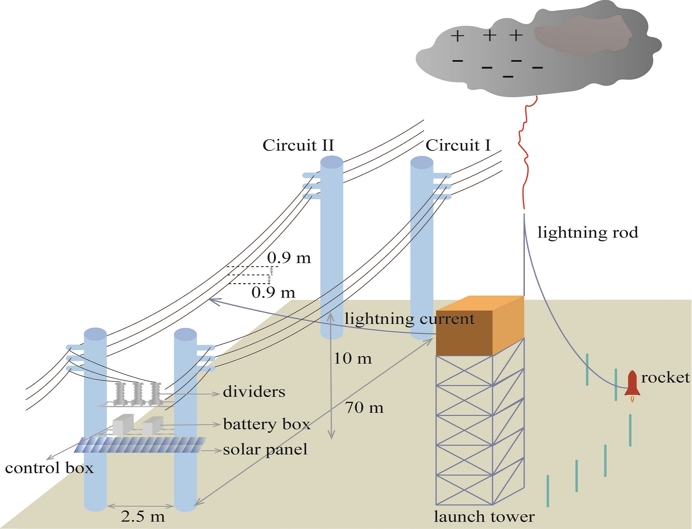
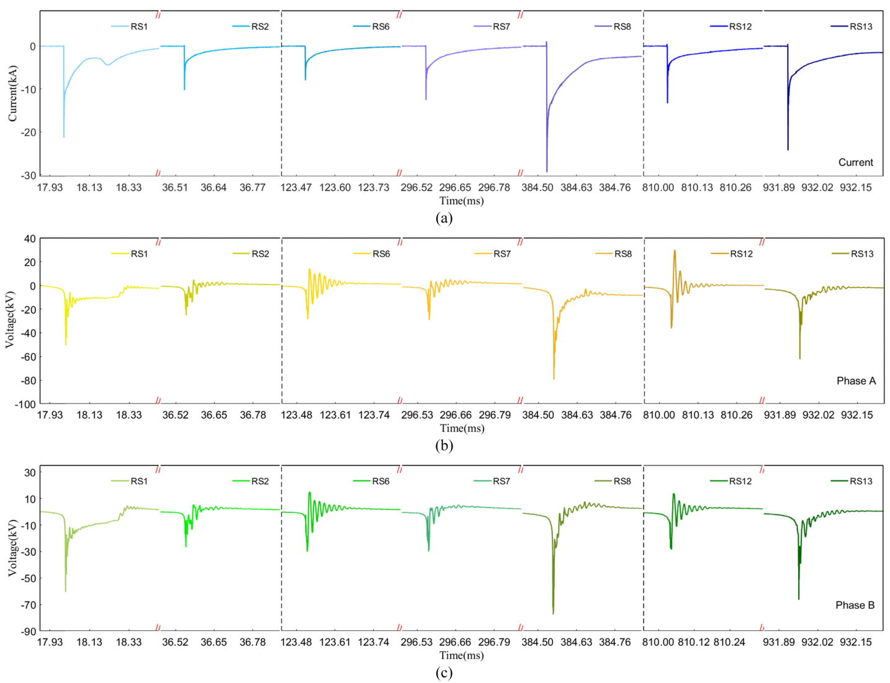
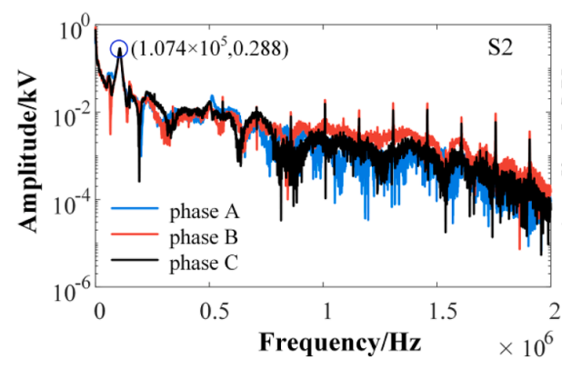

Yating Zhao

|
I received my Master's degree and Bachelor's degree in electrical engineering at Wuhan University.
I am now working in State Grid of China. During my postgraduate, my research area is lightning overvoltage in power systems. I did rocket-triggered lightning experiments in Guangzhou, China in 2022.
|
Publications
|

|
Induced voltage at the closest pole on parallel line due to direct triggered lightning on 10 kV double circuit distribution line
Yating Zhao, Jianguo Wang*, Li Cai, Quanxin Li, Yuqian Fang, Rui Su, Shoupeng Wang, Mi Zhou
2023 IET Gener. Transm. Distrib
PDF
|
|

|
Observation of Overvoltage at the Terminal of 10kV Distribution Line by Direct Triggered Lightning
Jianguo Wang, Yating Zhao, Yuquan Fang, Li Cai*, Shoupeng Wang, Zhiling Xu, Si Cheng
2022 IEEE Transactions on Power Delivery
PDF
|
|

|
Induced voltage at two poles of 10kV parallel distribution line caused by direct lightning strike on the phase wire of adjacent line
Yating Zhao, Jianguo Wang*, Li Cai, Quanxin Li, Mi Zhou, Rui Su, Zhiling Xu, Yadong Fan
2022 Electric Power System Research
PDF
|
|
|
Three-phase overvoltage at lightning strike point due to direct triggered lightning to the phase wire of 10 kV power distribution line
Jianguo Wang, Yating Zhao, Li Cai*, Yuqian Fang, Quanxin Li, Rui Su, Shoupeng Wang, Mi Zhou
2022 IET Gener. Transm. Distrib
PDF
|
|
|
Coordination control between excitation and hydraulic system during mode conversion of variable speed pumped storage unit
Yahong Chen, Changhong Deng*, Yating Zhao
2021 IEEE Transactions on Power Electronics
PDF
|
Selected Competitions
“CSEE Cup”National Electrical Math Modeling Competition, First Prize, 2022
“Mathorcup”The 12th National University Math Modeling Challenge, Second Prize, 2022
“Huawei Cup”The 18th China Post-Graduate Mathematical Contest in Modeling, Second Prize, 2021
The 10th Chinese Mathematics Competition of Chinese College Student, First Prize, 2018
Selected Schorships and Honors
China National Scholarship, 2022
Excellent Academic Scholarship at Wuhan University, 2021
Outstanding Graduate of Wuhan University, 2020
Ultra High Voltage Scholarship, 2019
Skills
Matlab, Origin, Visio, Lingo, SPSS, EMTP, C, Python, Ansoft
IELTS total 7.5(R:9 L:7 S:7.5 W:7)

|
{kind=link}
{kind=link}
{kind=link}
{kind=link}
{kind=link}